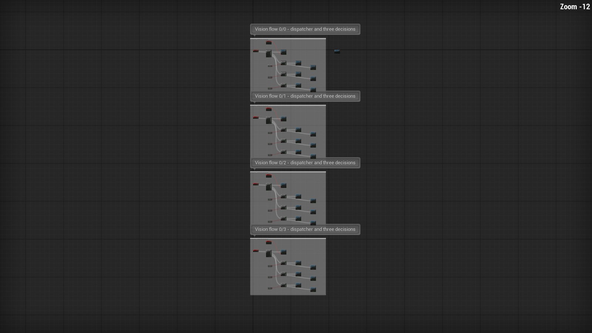
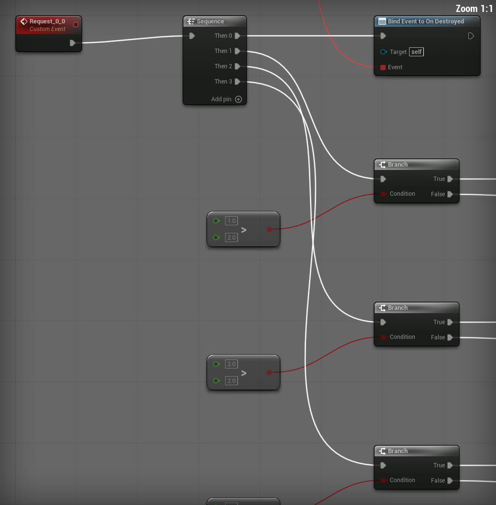

TOOLS / REQUESTS / RESULTS
TurboMCP tools
and TurboUX workflows.
Tool contracts, request examples, native captures and current release limits. Read the chapters or switch to presentation mode.
No chapters match. Clear the search to restore the guide.
Inspect graph structure, nodes and pins
TurboMCP reads graph names, node IDs, pin connections and reflected properties. An agent can use these outputs to identify targets before previewing an edit.
Starting question
Which widget handles the selected menu action, and which nodes read its input?
Tool sequence
Find the owning widget, read its input bindings, follow the relevant nodes, then inspect the actual focus in Play.
BlueprintLoad identifies graphs. NodeFind locates nodes. NodeContext follows nearby execution links and input sources.
Why the project exists
TurboMCP extends the stock Unreal MCP workflow for complex Blueprint and data work. Its intent is better context, focused edits and actionable failures. Fewer repeated calls and lower context use are design goals, not measured performance guarantees across models.
Connect through Unreal's MCP server
TurboMCP is an editor plugin registered alongside Unreal's native tools. It does not replace the MCP server or require a second service.
Discovers the live schemaUnreal MCP
Native connection and registryEditor APIs
Stock tools + TurboMCP
Use the foundation
Keep native object, actor, editor and other toolsets exposed by the running engine.
Add focused context
Read graphs and pins, inspect data and references, capture a region, and preview supported edits.
What the comparison does not prove
The repository compares source declarations for selected engine versions. Source overlap does not prove equivalent behavior, better performance or runtime compatibility. Discover what the current editor actually exposes.
Read, Look, Preview and Edit toolsets
The catalogue contains 196 documented declarations: 42 Read, 6 Look, 68 Preview and 80 Edit. Preview/Edit pairs count separately.
Graphs, fields, references and diagnostics.
Native captures and layout inspection.
Inspect a supported operation before applying it.
Apply a targeted operation and inspect its outcome.
Effects vary by tool. Check loading, execution, writes and saving in its contract.
Examples of effects hidden by a name
A read can load an asset and run project hooks. BulkExport writes a report file. PlayCheck can start PIE. A widget preview can execute widget code. Review the exact tool contract rather than assuming that Read or Preview means no effects.
Discover tool schemas and parameters
Inspect the registered toolset, parameter names and current help before constructing a request. Disabled tools and engine versions can change what is available.
- Discover
Find the enabled toolsets and the exact tool.
- Inspect
Read its schema, effects and target requirements.
- Narrow
Use an exact asset, graph, node and property path where supported.
Discover the current TurboMCP schema. Read /Game/Examples/BP_Demo.
List its graphs and missing information. Do not edit, compile, save or start PIE.Native call shape
Unreal's call_tool route uses a toolset name, a tool name and a nested arguments object. Follow the live server schema; do not flatten the tool arguments into the outer request. Disabled tools are absent from discovery and refused before execution.
Use diagnostics to correct a failed call
The response should identify the ambiguity or unsupported operation and steer the agent toward a focused correction.
Failure without a cause
Operation failed.The reply does not identify the failing target or input.
Diagnostic fields
Name the target. Return exact candidates or supported values. Explain the refusal and suggest the next read.
next: use ReadTurboMCPNodeFind for an exact node ID, then Mode=node with Size=1200x800 or Mode=neighbours with Size=1.Actual guidance retained with the synthetic graph capture evidence.
Recovery after an uncertain edit
A timeout or failed transport does not prove that nothing changed. Inspect the target and call log before replaying a mutation. The goal is a correct next call, not a promise that every failure resolves in one retry.
Verify edits, compilation and saving
Separate the operation result from transport success. Then separate changed state, compilation, persistence and rollback.
Read / planned / changed / refusedVerification
Exact read-back and diagnosticsPersistence
Explicit save outcome
After a change
Inspect intended fields, links and identities. Check that unrelated state stayed intact. Compile where the workflow requires it.
After a failure
Keep partial or unknown outcomes visible. Do not describe attempted undo as verified restoration.
Contract versus release evidence
The architecture defines structured result metadata including outcome, changed, compile, save, rollback and completeness. Read the actual response and each family's implementation. A written contract or a successful transport response does not certify every tool's conformance.
Search Blueprint nodes and their context
Start with the Blueprint structure, search the relevant calls, then read the context around exact node IDs.
Graphs and structureNodeFind
Exact graph and node IDsNodeContext
Execution and input sources
In /Game/Examples/BP_Demo, find calls related to the selected event.
Return exact graph and node IDs. Follow input sources and nearby execution links.
Report skipped content. Do not modify the asset.Why exact IDs help
Display names can repeat. An exact graph and node identity makes the next capture or pin operation reviewable. Search scope and page limits still matter: an empty bounded page is not automatically proof that a call is absent everywhere.
Example arguments: search all graphs in one asset
Template for ReadTurboMCPNodeFind; replace the asset and search terms. This request has not been run against a user project.
{"Asset":"/Game/Examples/BP_Demo","Words":"Print String","GraphName":"","Scope":"asset","MatchMode":"all","Format":"json","PageSize":40}The documented JSON result includes hits, errors, skips, coverage and next_cursor. Each hit identifies its asset, graph and node. Continue until next_cursor is null; skipped assets prevent an exhaustive conclusion.
Graph, node and neighbour captures
These three native captures show the same synthetic graph. An overview explains the structure; a focused view makes individual nodes useful.



Open any image at native size. These are retained captures, not a new benchmark.
Request the right view
LookTurboMCPCapture supports different modes. Supply all required fields from its schema. In neighbours mode, Size means hop count; in node mode, it can describe a pixel resolution. Use NodeFind for the exact Target instead of guessing a label.
Connect, repoint, append and remove nodes
Choose the smallest graph operation that matches the requested change. A graph dump is not automatically valid writer input.
Connect / repoint
Repair an exact pin link or redirect supported consumers. Inspect displaced links.
Append / copy
Add a bounded set of nodes or copy a supported selection. Keep existing placement and external references explicit.
Replace / remove
Review deletion and dependencies. Omitted content can be destructive in replacement workflows.
Inspect the selected graph and exact source/destination pins.
Preview only the requested connection. Show displaced links.
After approval, apply it and read back the connection and unaffected neighbours.Read-back is part of the task
Check node identity, link direction, pin types and literal defaults. Removal of an unused source is a separate change. Do not expand a one-wire repair into a graph rebuild merely because replacement syntax is convenient.
Preview layout changes and inspect the result
Tidy and layout reports help organize a graph. They do not guarantee that every dense graph becomes easier to read.
Nodes, boxes and scopePreview movement
Review fixed boundariesApply and capture
Check lanes and crossings
Look for improvement
Alignment, box membership, execution order, crossings and overlap. Use both overview and detail.
Keep the exceptions visible
Fixed nodes or a narrow selection can make a clean layout impossible. A shorter total wire length alone is not visual acceptance.
Review scope before applying
Read the current Tidy options and diagnostics. Some repairs need a larger explicit selection or placement choice. Do not move unselected nodes or change graph semantics to hide a layout problem.
Batch repoint operations within one graph
BatchEdit currently applies ordered repoint operations to one asset and one graph. Later plans see the state produced by earlier simulated changes.
Useful boundary
A related set of supported graph changes can be inspected together, with exact targets and a concise receipt.
Separate outcomes
The batch does not compile or save. A later compile failure does not automatically roll back the completed batch.
Failure behavior
Failed edits attempt owned undo and compare restored source state and dirty state. Unverified restoration blocks further TurboMCP edits in that editor session. Inspect and recover the asset before restarting; do not save uncertain changes. External project effects are not a general atomic transaction.
Query asset references and widget instances
Reference and structural searches answer different questions. Use both, and keep their coverage limits attached to the result.
Saved registry edges
RefsBatch finds referencers or dependencies for assets or folder seeds, with kinds, bounded depth, missing-file information and pagination.
Owned widget structure
WidgetInventory matches classes, references, overrides and graph nodes. It can report matching instances and relevant values.
Audit saved referencers of /Game/Examples/Input, then inspect matching widgets.
Read every continuation page. Preserve reference kinds, skipped assets and limits.
Separate confirmed matches from unsupported or unknown coverage.What can still be absent
Registry evidence can miss unsaved, configuration or dynamic references. WidgetInventory excludes inherited trees, embedded internals and native implementations; collection and dynamic-reference limits also apply. Loading candidates can run PostLoad or dependency compilation. “No explicit save” does not mean “no project code ran.”
Example arguments: folder referencers
{"Folder":"/Game/Examples/Input","Recursive":true,"Direction":"referencers","Kinds":"hard,soft","Depth":1,"PageSize":100}Template for ReadTurboMCPRefsBatch. Expect seed and edge records with reference kinds and missing-file information. Continue with nextCursor. The query reads saved registry evidence; dynamic, configuration and unsaved references can be absent.
Read Data Asset fields and class defaults
Inspect selected reflected properties across Data Assets. Keep exact paths, type information, errors and continuation with the values.
Keep the answer small
Select named property paths. Use keys-only reads for supported maps or arrays when the question is about membership.
Know the owner
Blueprint class defaults use an already-loaded generated class and default object. This is distinct from constructing a runtime instance.
Read the requested fields from my named input Data Assets in a bounded batch.
Return asset identity, property path, value and errors. For the brush map, return keys only.
Continue all pages and report incomplete coverage.Load effects and completeness
Data Asset loads can run hooks and dependencies. The reader does not request property writes, compilation or saving. Its paged output carries rows, totals, errors and continuation; inspect completeness rather than relying only on the first page.
Example arguments: collection keys
{"Asset":"/Game/Examples/DA_Demo","Property":"Brushes","Mode":"keys","Source":"asset","Offset":0,"PageSize":32}Template for ReadTurboMCPDataAssetProperty. The example class must expose a supported Brushes collection. Keys mode returns map keys or array indices without their values. Copy nextOffset until it is -1. Unsupported or missing properties are reported as errors.
Edit properties with a state revision
Read the exact field and revision, preview the operation, then apply only that approved change. Refuse stale state instead of overwriting a newer edit.
Value + revisionPreview
Exact property operationApply
Current revisionRead back
Changed + untouched values
Supported intent
Set a supported value, upsert or remove one map entry, or create a compatible owned instanced child.
Avoid broad replacement
Do not send an entire live map to an unrelated JSON writer when the task changes one entry.
Property text and ownership
Use the Unreal property text format reported by the reader. Owned structs and instanced children differ from externally referenced assets. Unsupported types, invalid references and stale revisions must be explicit. Project callbacks may run; verification and saving remain distinct outcomes.
Create a typed Data Asset
Give the tool a real concrete UDataAsset subclass and an unused destination. Do not substitute a placeholder class just to make creation succeed.
- Preview the definition
Confirm the loaded class, destination and supported initial properties.
- Create in memory
Preserve class defaults and apply the explicit values.
- Inspect and save
Read back type and fields. Save and source-control add are separate actions.
Inspect the concrete Data Asset class and its defaults.
Preview creation at /Game/Examples/DA_New with only the requested initial fields.
Refuse an existing destination. Do not save until the new asset has been inspected.Creation effects
Preview validates without allocation. Edit can run constructors and project code. It does not overwrite an existing package or compile a Blueprint to manufacture the requested class.
Set and remove DataTable rows
Read the real row struct first. Preview the entire operation list and verify both changed rows and preserved fields.
Set or create
Potion = Health=100,Label="Small potion"Illustrative help syntax. The fields must exist in the actual row struct.
Remove
- ObsoleteDeletion discards the named row. It is not an empty-value update.
Existing unspecified fields are retained. New rows start from struct defaults.
Validation and rollback limits
Preview uses temporary row data and can load referenced objects. The writer validates the list before writing. Failed read-back attempts owned undo and reports whether row restoration was verified. External callback effects are not covered by that row check. Saving is explicit.
Example call arguments
{"Asset":"/Game/Examples/DT_Items","Rows":"[\"Potion = Health=100,Label=\\\"Small potion\\\"\",\"- Obsolete\"]"}Template for PreviewTurboMCPDataTableRows. Rows is a string containing a JSON array of operation strings. The table must use a row struct with the illustrated Health and Label fields. Preview reports validation and proposed changes; apply requires a separate Edit call.
Inspect widget and material structure
A capture shows what rendered. Structured reads explain hierarchy, property values, bindings and inheritance.
Widget Blueprints
Inspect the designer tree, instance properties and relevant input references. Use preview images for appearance, PIE for active behavior.
Materials
Read parameters, parent inheritance, local overrides, output trees and named reroutes. A changed parameter is not proof of rendered equivalence.
What owns this value?Visual capture
What does the user see?Runtime check
What actually happens?
Choose a supported operation
Do not infer complete widget or material authoring from a screenshot or a broad family name. Check the exact tool for supported properties, node types, class ownership and side effects. Some previews construct objects or run project code.
Inspect PIE focus and send bounded input
Inspect the local player and focus, send a bounded input through the supported PIE route, then verify the action and resulting state.
Target, focus, contextsInput
Bounded key or axisAfter
Action, screen, focus
What the reader reports
Selected-player focus, held synthetic input and Enhanced Input context priorities. Optional CommonUI information may be unavailable.
What the writer does
Routes keyboard/gamepad input through Slate in PIE. It executes game/UI code; it is not an asset transaction.
Important boundaries
The state report does not determine the routing owner. Use explicit session-bound targets where exposed. No arbitrary OS input, external-process injection or direct Enhanced Input action injection is implied. Holds are bounded and need editor ticks. Check actual behavior, not only successful delivery.
Target checks, edit guards and local access
The editor can load project code, write assets and run play sessions. Scope controls and validation reduce mistakes; they are not an operating-system sandbox.
Target
Resolve exact identities. Refuse ambiguous or unsupported inputs.
Coordinate
Serialize mutations. Respect readiness, transaction and revision checks.
Inspect
Read back results. Keep partial changes and uncertain restoration visible.
Logging and connection policy
Keep the MCP listener local and follow the generated connection configuration. Call logs can contain paths, arguments and project results. Review evidence before sharing it. Tool-domain and exact-tool settings are per-user controls; they do not disable unrelated native toolsets.
Do not weaken the guard to pass a test
A refused call may be the correct result. If a task needs unsupported behavior, record a bounded feature request with an acceptance case. Do not remove a safety check merely to improve apparent coverage.
Report tool failures and feature requests
Use one feedback workflow for bugs, tool improvements and feature requests. Keep observed facts separate from a suspected cause.
Include
Tool and engine version, exact request, expected result, actual output, side effects and a sanitized synthetic reproduction where possible.
Then
Search for duplicates, preserve original evidence, define the smallest scope and state what would prove the fix.
Use the reporting skill
The session-report skill prepares a local draft in the standard format. Review and sanitize the draft before submitting it. A useful issue explains the user's task as well as the failing call; it does not need a guessed implementation diagnosis.
Assign, test and integrate a scoped change
Agents can work independently when their scopes are explicit and disjoint. Build and editor resources need shared ownership and scheduling.
- Assign
Reviewed contract, approved base commit, exact files, clean worktree and durable claim.
- Verify
Focused offline checks, compilation when needed, and native or visual evidence for the changed behavior.
- Integrate
Review source and results, preserve open failures, update tracking and push a coherent batch.
Record the exact checks run and retain failed, blocked or untested acceptance cases.
What reviewers need
Candidate and base identity, changed files, commands, results, screenshots when visuals matter, and explicit untested boundaries. Workers do not self-approve shared status or claim stable readiness from implementation alone.
Install and enable the source plugin
The current public preview targets Windows and the stock Unreal 5.8.4 source revision pinned in engine.lock.json.
- Build
Copy Plugins/TurboMCP into your project. Enable dependencies and build its editor target with the pinned toolchain.
- Enable
Open Editor Preferences → Plugins → TurboMCP, enable the preference, then restart the editor.
- Connect
Enable Unreal's local MCP server, use its generated client settings and discover the registered toolsets.
Read TurboMCP status and discover the enabled tools.
Inspect one known synthetic asset without editing it.
Report the engine/plugin state and any missing prerequisites.Before diagnosing a missing tool
The per-user TurboMCP preference defaults to off. Disabled tools are not registered; even Status is unavailable when the whole plugin is disabled. Check the preference and startup log before treating discovery as a code defect.
Package evidence and release requirements
Use the release channel that matches the evidence. The public repository supports development; stable 1.0.0 has separate acceptance gates.
main
Reviewed development. Successful validation can publish the day's source prerelease.
stable
Starts at the first approved stable release and advances to accepted version tags.
5.9 candidate
Separate compatibility work on codex/ue59-preparation. No supported-baseline change implied.
What a packaged release must establish
Exact source and engine identity, archive hashes, license/notices, clean-consumer installation and relevant native acceptance. A successful BuildPlugin run alone is not proof of Blueprint-only/C++ consumer compatibility or Launcher support.
Current status
Supervised Win64 BuildPlugin and ZIP verification passed on the pinned Unreal 5.8.4 source engine. The package has 371 files and a matching module build ID. Fresh Blueprint-only/C++ consumer installation and Launcher compatibility are unverified. No binary was attached to the source-only daily release. Stable 1.0.0 is not approved.
Recorded package run: 17 November 2026
Source: 9c97d01af2c094fb1f022fccf903f377a2f78fdc. The supervised run completed in 900.973 seconds; doctor and Win64 BuildPlugin exited 0. This duration describes that run, not expected build time on another machine.
ZIP: 371 files, 40,160,669 bytes, including PDB symbols. SHA-256: eeafc80cb06838cf71e5ac836673d3daedd328d7dfb502f0f96850adad1617a6.
The manifest records engine 5.8.4. Stock packaging writes descriptor EngineVersion 5.8.0 and Installed=true; use the manifest and module build ID when checking the package. See the recorded packaging result and current status.
Build interactive HTML/JSON UX prototypes
Agents can generate HTML and JSON that people can click, inspect and revise. TurboUX adds a structured editing environment around that workflow.
Prompt-only HTML
Fast first mockup. Later edits need repeated context; components, routes and input rules can drift.
Structured UX project
Stable screens and controls, reusable parts, explicit navigation and a Play loop that keeps the model inspectable.
TurboUX models screen routes, focus targets, input contexts and control behavior for review in Play.
Relationship to TurboMCP
TurboUX explores intended behavior in a local prototype. TurboMCP helps inspect and modify supported parts of its native Unreal implementation. They are separate applications; automatic native synchronization is not a current guarantee.
Store screens, routes and inputs in JSON
A project is more than rendered screens. Stable IDs connect geometry, navigation, focus, input context and referenced assets.
Screens
Controls and groups
Geometry and styles
Referenced assets
Flow
Routes and guards
Dialogs and Back
Focus targets
Inputs
Actions and mappings
Active contexts
Screen intent bindings
Baseline, working state and history
Imported evidence and the authored working model are distinct. Revisioned commands validate a candidate before committing it. A rendered image can be kept as an asset, but it does not replace routes, focus or input data. Portable export is not an export of the editor's entire transient undo history.
Arrange screens, edit controls and test routes
Use one project across different work contexts. Arrange the flow, edit a screen, then try the authored navigation.
Screens and connectionsEdit
Layers and propertiesPlay
Navigation and focusReview
Revise the same project
Human authoring
Place an element, move it, inspect its layer and edit its properties. Save and reopen the project to verify persistence.
Prototype behavior
Test routes, Back behavior, focus and prompts. Keep modeled behavior separate from the real game's backend or engine execution.
Evidence and limits
Focused local checks cover drag/drop, movement, Delete/Undo, editing, Save/reopen and Play routes at normal and narrow sizes. This is not full V1 certification. Physical input, advanced combinations and remaining browser-dialog paths need their own checks.
Manage elements, styles, skills and assets
Dedicated workspaces keep the canvas focused while preserving the design rules that apply across screens.
Element Factory
Create and manage named reusable presets. Insert instances into a screen.
Styles + grids
Keep colors, typography, spacing, named grids and custom guides with the project.
Skills
Attach reviewed UX guidance as context. Opening guidance does not execute an agent.
Library
Manage images, fonts, icons and project dependencies in a dedicated work context.
AI-assisted element building
A builder request provides an external agent with the current project revision, selected controls, reference screens and a description. TurboUX does not bundle a model. Native Unreal mappings need explicit class/property evidence; visual similarity is not a mapping contract.
Model input mappings and active contexts
Model actions, device mappings, context priorities and screen intent together. Make collisions, shadowing and unknown semantics visible.
Back → previous screenModal open
Back → close modalReturn
Restore previous focus
Author and inspect
Connect action, device/key, mapping context and active screen state. Inspect active candidates before testing a route.
Keep unknowns
Complex engine triggers/modifiers and physical device behavior are not proved by a static input model.
Bridge to native input work
Use the prototype to describe the intended screen route and focus. Verify CommonUI, Enhanced Input, mapping priorities and actual gameplay behavior in Unreal separately. A locally simulated conflict result is not a complete audit of engine routing.
Share revisioned commands between UI and MCP
The Rust host serves the web UI and MCP clients. Supported changes pass through a revisioned command boundary.
Stable targets + expected revisionValidate candidate
Refuse stale or invalid stateCommit
Working model + change record
Proposal
Read the current revision and selection. Prepare a focused change with provenance and intended effects.
Review
Inspect, refine, accept or reject it. Assistant provenance does not become human approval because a caller changes its name.
Parity is tracked per action
Sharing domain commands reduces duplicated behavior. It does not prove every UI/session gesture has an equivalent MCP action. Advanced 3D gestures, camera capture, external-download flows and some compound operations remain incomplete or unverified. Native Unreal writes are outside this local boundary.
Save locally and export project bundles
Save writes to the local application library. Export creates a portable project copy with its referenced dependencies.
Application package
Rust executable and shared web UI. The same application opens the generic demo and separately supplied projects.
Portable .turboui bundle
A ZIP containing project.json, a manifest and content-addressed assets. Import validates identity and dependencies before opening an unsaved draft.
What images and exports preserve
Images and fonts can travel as referenced assets. Missing dependencies cause a report rather than a silently incomplete project. Automatic screenshot persistence is not implemented. Stored GLB support does not imply GLB rendering; unsupported SVG binary dependencies also have limits. Keep original JSON for the complete authored behavior.
Export scene data and review import losses
Web-first SVG and scene JSON support design review. They are not a promise of full fidelity across arbitrary Figma components.
Visual exchange
Carry supported geometry, hierarchy, text and style metadata with stable identities. Review a loss report before importing supported changes.
Behavior stays in JSON
Routes, guards, focus and inputs remain in the original project. A flattened visual export is not a semantic backup.
Figma adapter status
An experimental development plugin uses Figma's frame/text APIs and retains stable IDs in plugin data. Editable round-trip validation remains outstanding. Typography, effects, auto-layout, nested components, image assets and navigation do not have a general faithful round trip. No Figma development workflow is required to use the main authoring loop.
Map prototype behavior to Unreal owners
A handoff identifies screens, routes and expected input behavior, then maps them to exact Unreal assets for implementation and verification.
- Design packet
Screen/control IDs, routes, focus, contexts, guards and expected behavior.
- Native owners
Exact Widget Blueprints, CommonUI layers, input assets and project revision.
- Verify
Scoped changes, compile, structured read-back, then test the actual route and focus.
TurboUX Play checks the prototype model. TurboMCP helps inspect the native implementation.
Current boundary
Automatic two-way native synchronization is a target, not a current guarantee. Accepted canvas edits must not silently trigger Unreal mutations. Keep local proposal acceptance, project persistence, exported handoff and native execution as separate explicit outcomes.
Remaining release and interoperability checks
Both tools are development work. Useful focused evidence is available; full release and interoperability acceptance is still separate.
TurboMCP
Public source and daily snapshots are available. Win64 BuildPlugin and package verification passed. Remaining release checks include exact-candidate acceptance and fresh Blueprint-only/C++ consumer installation.
TurboUX
A working local authoring loop and portable project model. Next: complete action parity, remaining browser flows, clean-machine and physical-input checks, then validated exchange.
How to read this guide
Current tools means the capability is described by the source; it does not certify every combination. Recorded evidence refers to a bounded past check. Experimental and planned features retain that status until their own acceptance work is complete. This guide contains no measured cross-model benchmark or stable V1 guarantee.